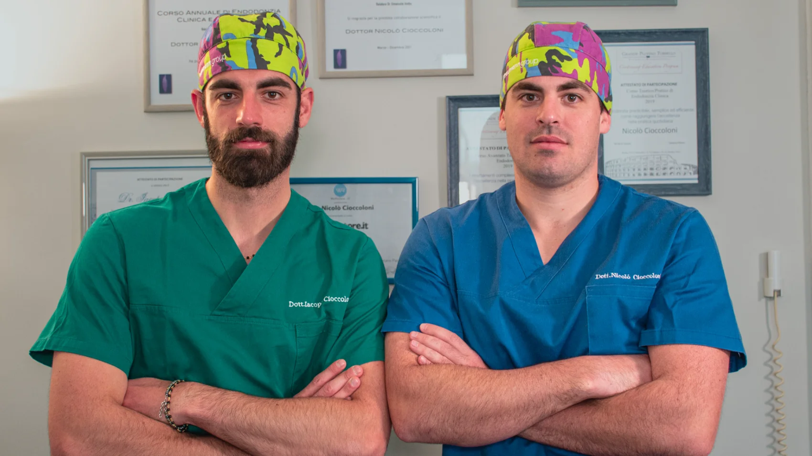
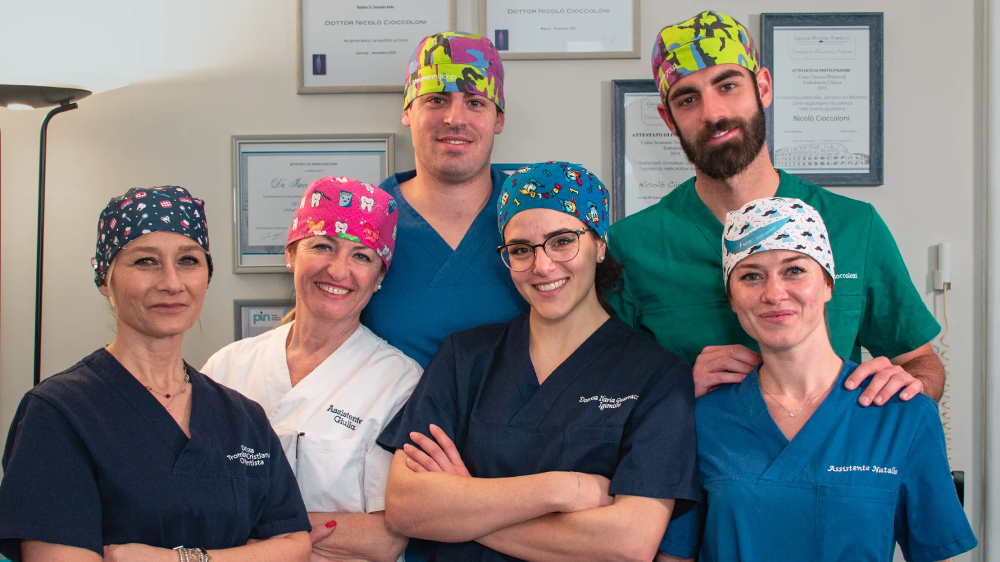

Implantologia
Sostituiamo i denti mancanti con impianti Straumann, per una masticazione naturale e duratura.
Impianti singoliImplantologia guidata
Ogni sorriso racconta una storia. Da Odontoiatria Cioccoloni uniamo esperienza, innovazione e attenzione alla persona per offrire trattamenti personalizzati in un ambiente moderno, accogliente e tecnologicamente avanzato.
5,0 · 44 recensioni verificate su Google

Prendersi cura del sorriso delle persone è una tradizione che accompagna la famiglia Cioccoloni da oltre trent'anni. Dalla sede storica di Poggio Moiano fino alla sede di Roma, continuiamo a mettere al centro ascolto, qualità e innovazione.
Oggi la nuova generazione porta avanti questa storia con la stessa passione, integrando formazione continua e tecnologie di ultima generazione.

Una squadra affiatata, un unico obiettivo: il tuo sorriso.
Competenza clinica, tecnologia e relazione umana: ecco cosa rende la nostra cura diversa.
Una storia clinica costruita paziente dopo paziente, dal 1989 ad oggi.
Un team con competenze dedicate: implantologia, ortodonzia, igiene ed estetica.
Scanner intraorale e flusso digitale per diagnosi precise e più comfort.
Ogni trattamento nasce dall'ascolto e da un percorso costruito su misura.
Spazi curati e un'atmosfera serena, pensati anche per bambini e pazienti ansiosi.
Collaboriamo con Invisalign, Straumann e 3Shape per risultati affidabili.
Dalla prevenzione ai trattamenti più complessi, con un unico standard di qualità e attenzione.
Sostituiamo i denti mancanti con impianti Straumann, per una masticazione naturale e duratura.
Cura canalare di precisione per salvare i denti compromessi ed eliminare il dolore.
Sedute di igiene professionale e controlli periodici per proteggere denti e gengive.
Soluzioni fisse e mobili realizzate con flusso digitale per estetica e funzione.
Faccette, sbiancamento e restauri estetici per un sorriso armonioso e naturale.
Estrazioni, chirurgia dei denti del giudizio e piccoli interventi in sicurezza.
Non sai quale trattamento fa per te? La prima visita è il modo migliore per scoprirlo.
Prenota una visitaUn flusso di lavoro interamente digitale ci permette di ridurre i tempi, aumentare la precisione e rendere ogni trattamento più confortevole — dalla diagnosi alla realizzazione.
Allineatori trasparenti e su misura per raddrizzare i denti in modo discreto e confortevole.
Impianti tra i più affidabili al mondo, per soluzioni durature e biocompatibili.
Impronte digitali senza paste e materiali: rilievi rapidi, precisi e più piacevoli.
Volti veri, competenze reali. Una squadra che lavora insieme per il tuo benessere.
Le biografie e i percorsi formativi dei professionisti sono in aggiornamento.
Dal 1989 rappresentiamo un punto di riferimento per il territorio. Uno studio dove esperienza, innovazione e rapporto umano convivono ogni giorno.
★★★★★"Professionalità e gentilezza dal primo momento. Mi sono sentita ascoltata e seguita in ogni fase del trattamento."
★★★★★"Studio moderno e team competente. Ho apprezzato l'attenzione ai dettagli e la chiarezza nel piano di cura."
★★★★★"Porto qui tutta la famiglia, bambini compresi. Ambiente sereno e sempre disponibili a rispondere a ogni domanda."
Testimonianze rappresentative. Le recensioni verificate sono consultabili sul profilo Google dello studio; collega il profilo per mostrare i testi reali.
Prenota una prima visita e conosci il nostro team. Scrivici o chiamaci: ti risponderemo con la sede più comoda per te.
Via Crescenzio 19
00193 Roma (RM)
Via Garibaldi 4
Poggio Moiano (RI)